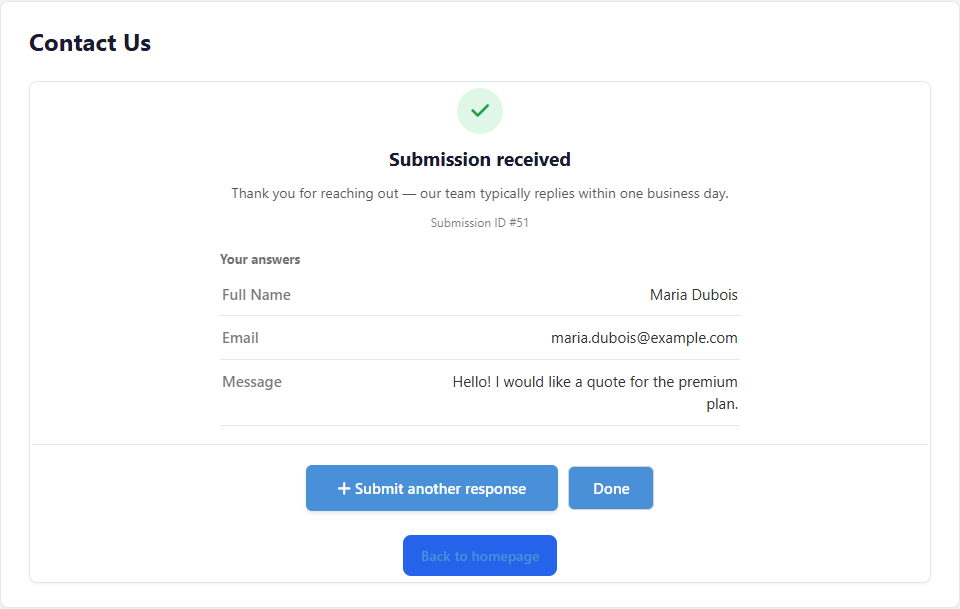
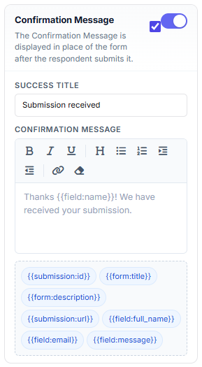
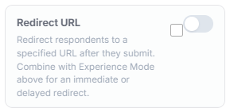
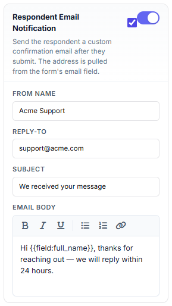
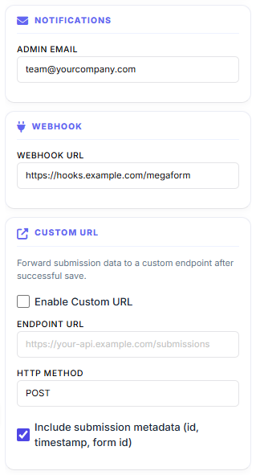
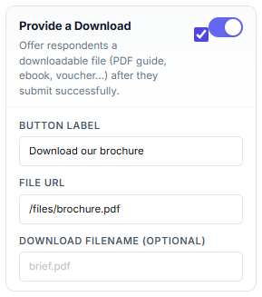

After Submission: Confirmation, Emails & Notifications
What should happen the moment a visitor presses Submit? MegaForm gives you a full post-submit toolbox: an in-form confirmation screen (or redirect), a thank-you email to the respondent, an alert email to your team, a file download, webhooks and analytics events.
Everything below is configured in the Form Builder → Settings tab (right rail), so each form has its own behaviour.
The confirmation experience
This is what the respondent sees by default — a rich confirmation card shown in place of the form:

Under Confirmation in the Settings tab you choose one of three confirmation types:
- Message — show a confirmation card in the form (no redirect).
- Page / Redirect — send the respondent straight to another page or URL.
- Message, then redirect — show the message, then redirect after a configurable delay (with a "Redirecting shortly…" notice).

The Success Title and Confirmation Message support formatting (bold, lists, links)
and token chips — click a chip such as {{submission:id}}, {{form:title}} or
{{submission:url}} to insert it into the message.
Optional extras on the same card:
- Review before submit — respondents see all their answers on one screen (and can go back to edit) before the final Submit. Great for long or multi-step forms.
- Submission Details — show the submission ID (a reference number the respondent can quote), an answer summary (with empty answers hidden if you like) and a "Submit another response" button.
- CTA buttons — up to two custom buttons (primary + secondary) linking anywhere, e.g. "Back to homepage" or "Book a call".
Redirect URL

Toggle Redirect URL on and combine it with the confirmation type above for an immediate or delayed redirect — useful for thank-you landing pages and conversion tracking.
Emails
Respondent email (autoresponder)
Send the person who submitted the form a confirmation email. The recipient address is pulled automatically from the form's email field; you control the From name, Reply-To, subject and a formatted body:

Admin notification
Under Notifications, enter the address (or addresses) that should be alerted on every new submission — the email includes the submitted answers:

Emails are sent through your site's configured SMTP server (Oqtane host settings → SMTP). If nothing arrives, check the SMTP configuration and the site logs first.
Give something back: a download
Toggle Provide a Download to offer a file — a PDF guide, brochure, ebook or voucher — right on the confirmation screen:

Push the data somewhere else
The same Settings tab wires post-submit integrations:
- Webhook — POST the submission as JSON to any URL (outgoing URLs are validated server-side against SSRF).
- Custom URL — forward the submission to your own API endpoint (POST or PUT, with optional metadata: id, timestamp, form id).
- Google Analytics — fire a configurable GA event on each successful submit.
- Database insert / Google Sheets — write each submission into your own database table or a spreadsheet; see Storage & Integrations.
What happens automatically
Independent of the settings above, every successful submit:
- Stores the submission — browse, filter, export and manage columns in Submissions & My Inbox.
- Runs the form's workflow (if one is attached) — approvals, service tasks, user tasks in My Inbox; see Workflow.
- Applies anti-spam and rate limits configured for the form (honeypot, per-window submission caps).
Quick checklist
| Goal | Where |
|---|---|
| Change the thank-you text | Settings → Confirmation → Success Title / Message |
| Redirect to a landing page | Settings → Confirmation Type + Redirect URL |
| Email the respondent | Settings → Respondent Email Notification |
| Alert your team | Settings → Notifications → Admin Email |
| Offer a brochure download | Settings → Provide a Download |
| Send data to another system | Settings → Webhook / Custom URL, or Storage & Integrations |
| Review & approve submissions | Submissions & My Inbox + Workflow |